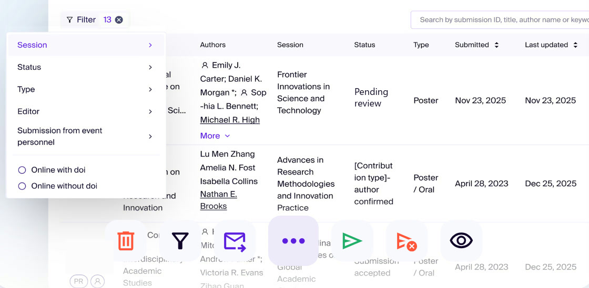
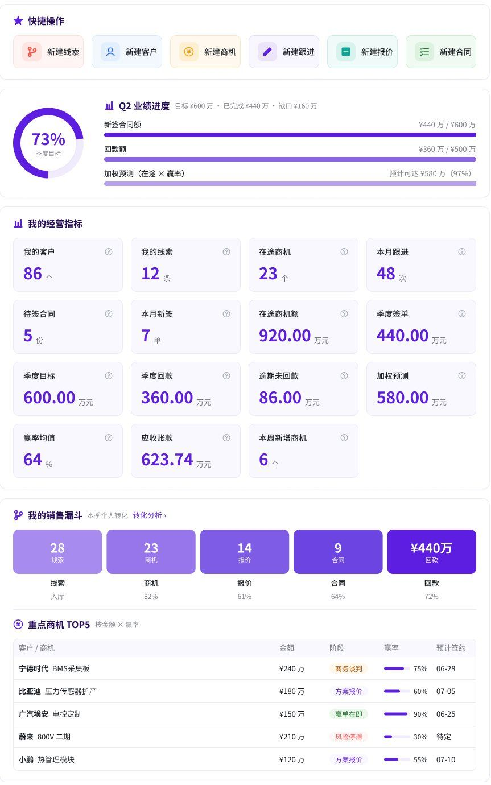
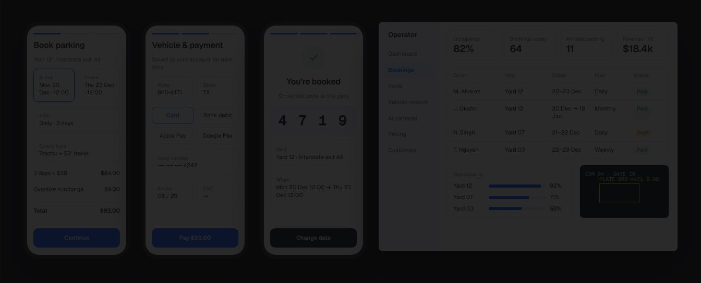
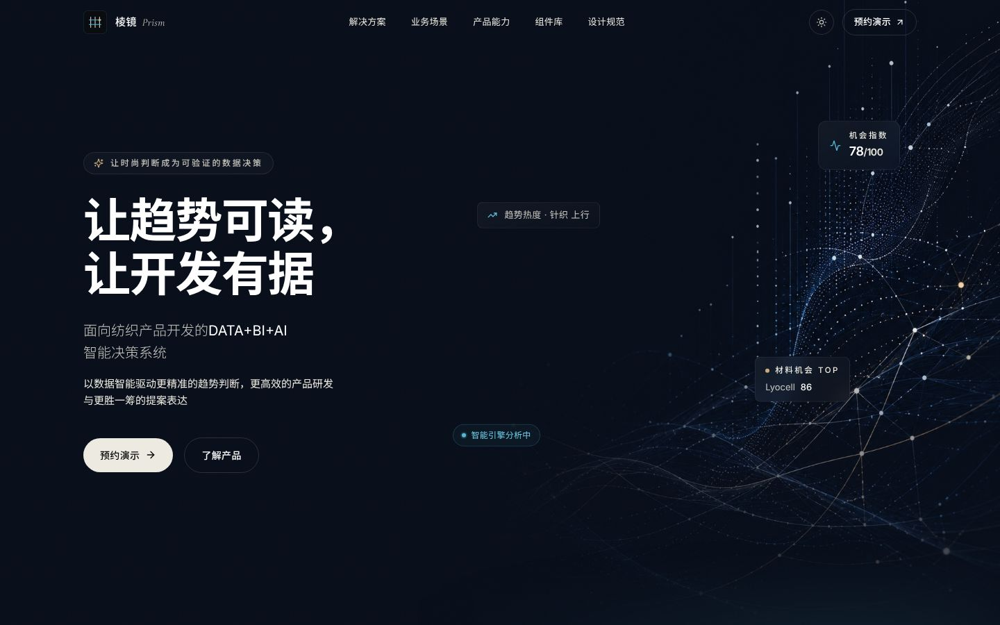
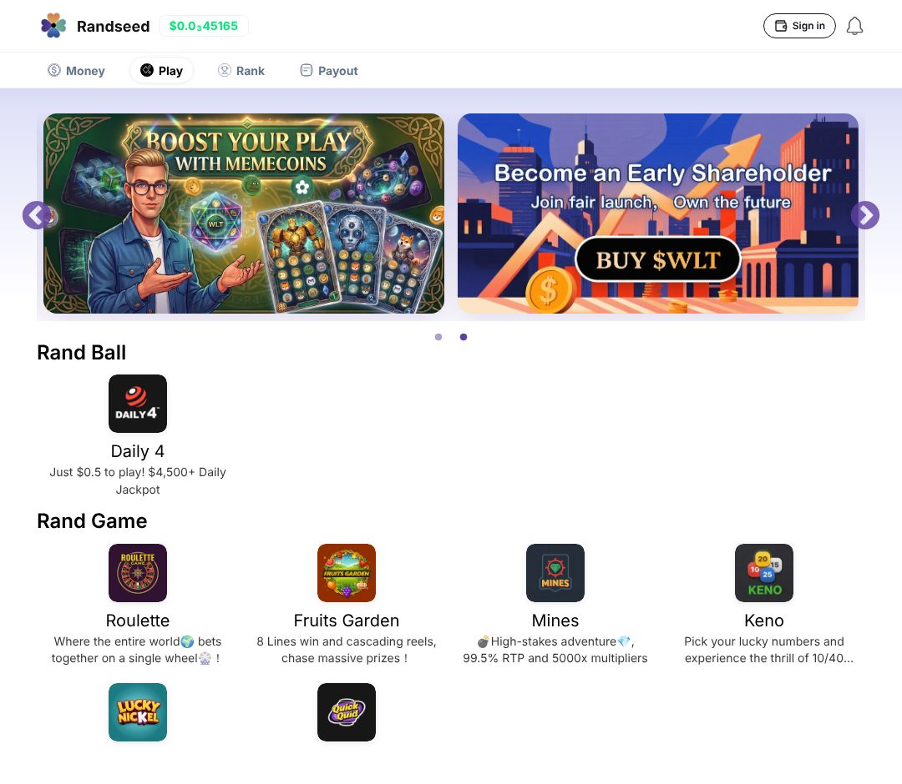

I designproducts agentscan build.
Code is cheap now. Judgment isn’t. I own what AI can’t infer: what to build, the system it obeys, the proof it works.
01 — Selected work5 cases · B2B and consumer · 01–04 are codenames, clients under NDA
01
Atlas
Conference management SaaSMonolith → modular SaaS
Product strategy · redesign · relaunch
→

02 Forge Lead-to-cash operations console1 system · 15 modules · 4 role homes Design system · UX / UI · Figma →
03 Relay Truck-parking booking web appBuilt end to end by my agent pipeline Agent skills · AI pipeline · delivery →
04 Prism AI decision platform for textile developmentBrand, system, landing page, agent entry files Design system · landing page · Vue package →
05 Randseed Consumer game platform · ToCVisual UI + agent-callable components Visual design · design system · agent-callable →
02 — Operating modelThree layers, each one leaves files behind
A / spec
Decide what is worth building.
Positioning, pricing, acceptance criteria: reviewable by people, executable by agents.
problem ─▶ position ─▶ flows ─▶ acceptance criteria
│
└─▶ pricing ─▶ launch plan
B / system
Encode the rules once.
One token set feeds Figma, code and agents.
tokens ─┬─▶ figma variables
├─▶ css / component package
└─▶ DESIGN.md · SKILL.md · AGENTS.md
C / pipeline
Let agents build. Make them prove it.
I write the skills and gates, then read the evidence.
ticket ▶ plan ▶ dispatch ▶ build ▶ gates ▶ evidence ▶ human └────────────── skills I wrote ──────────────┘
03 — ServicesScoped in a 30-minute call
S1
B2B product design sprint
- Positioning, ICP, value proposition
- Object model and key flows
- Pricing and launch plan
- High-fidelity prototype with acceptance criteria
S2
Design system, delivered ready to use
- Figma variables and component library
- CSS tokens, light and dark
- DESIGN.md · SKILL.md · AGENTS.md
- Component package and landing page
S3
Agent delivery pipeline skill pack
- Ticket contract and acceptance-criteria style
- Skills for planning, dispatch, execution, review
- Lint, type, E2E and budget gates
- Evidence and traceability rules
S4
Or simply hire me.
- Product leadership, AI product design, design systems
- Remote-friendly, comfortable across EU and US time zones
04 — ContactA brief in three clicks